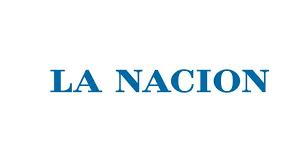

Clarín es un periódico argentino editado en la ciudad de Buenos Aires. Fue fundado el 28 de agosto de 1945, por Roberto Noble. La versión digital del periódico Clarin.com es el sexto periódico digital en español más consultado del mundo con 6 948 000 de usuarios únicos en septiembre de 2020.
La Nación es un tradicional periódico argentino de la Ciudad de Buenos Aires y de la empresa propietaria. La expresión también es parte del nombre del canal de televisión La Nación + y de la tarjeta Club La Nación.
El Día es un periódico argentino que se edita en la ciudad de La Plata, provincia de Buenos Aires.